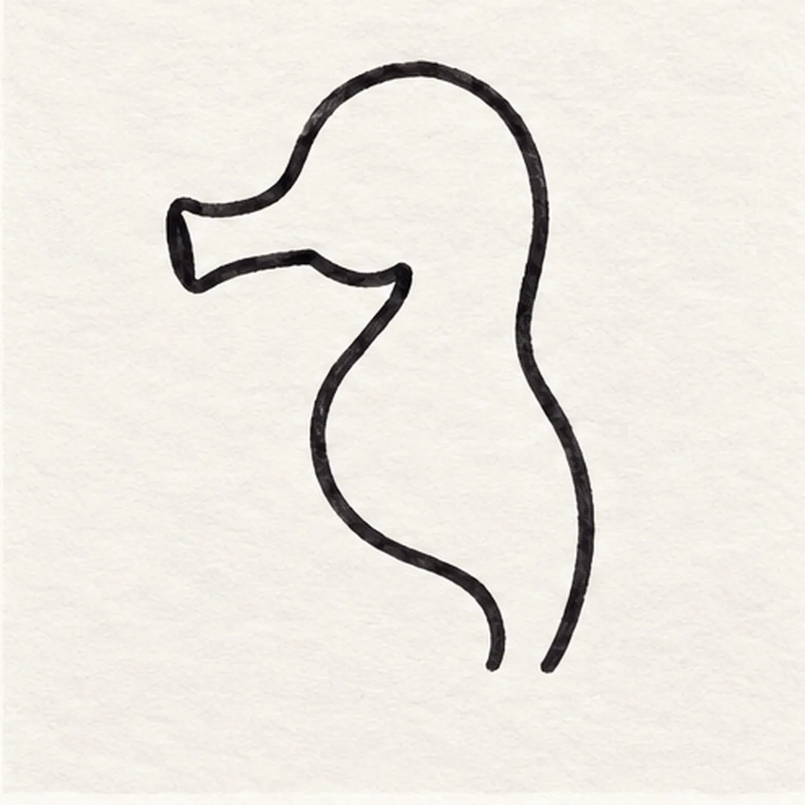
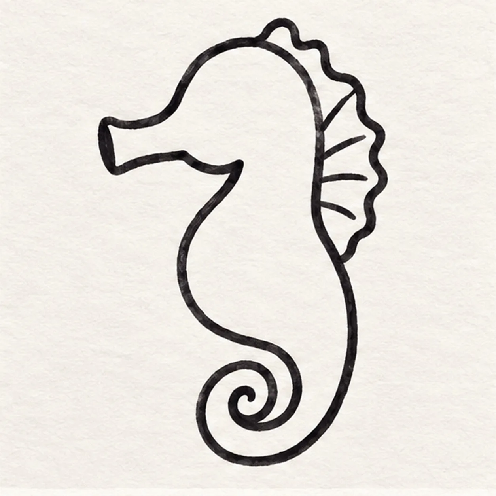
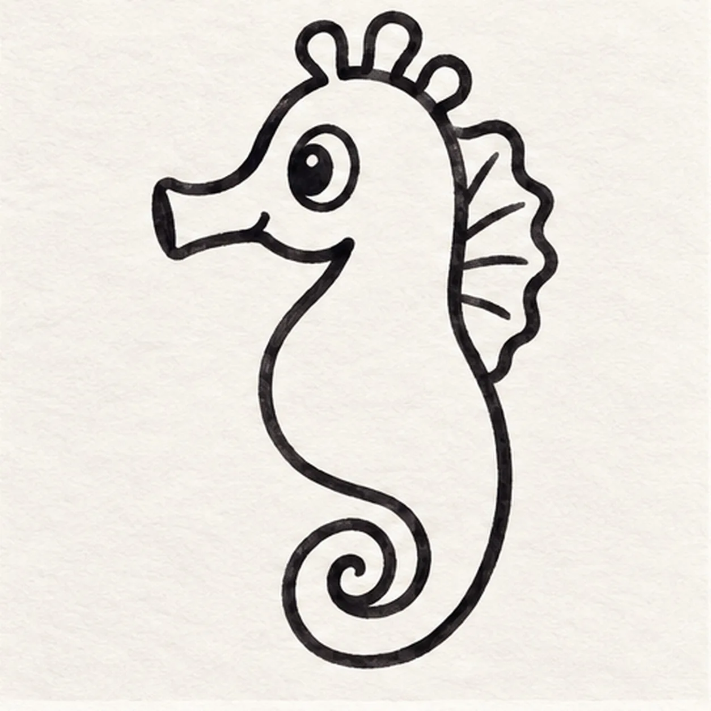
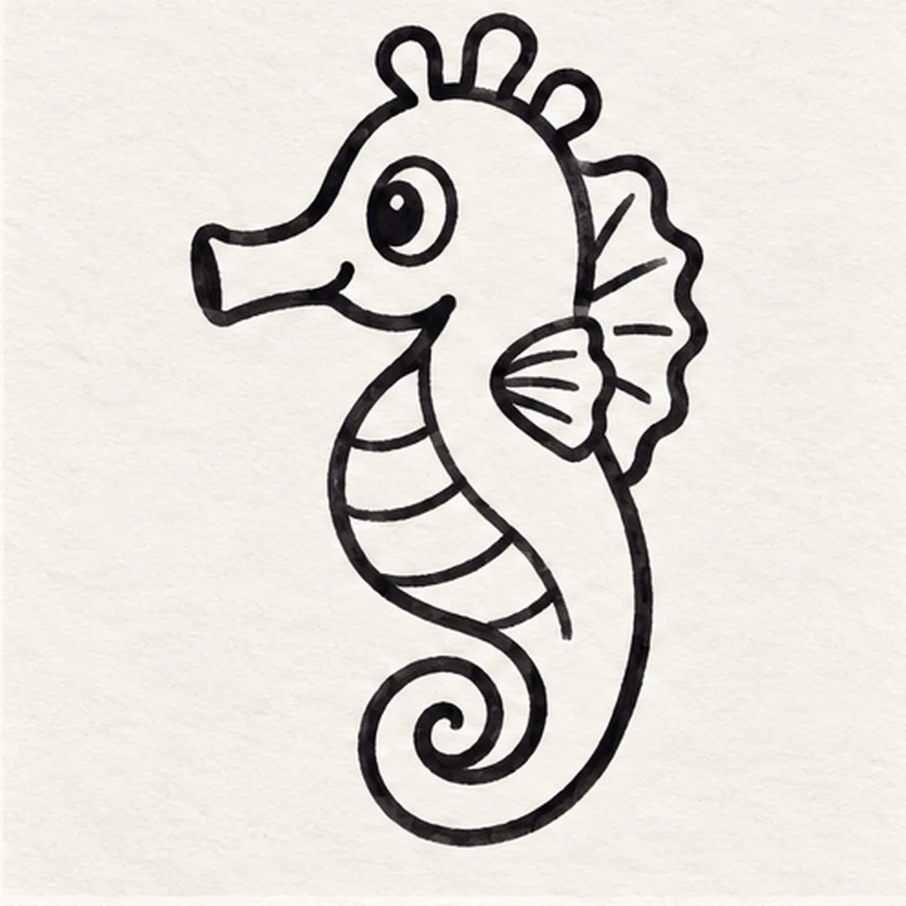
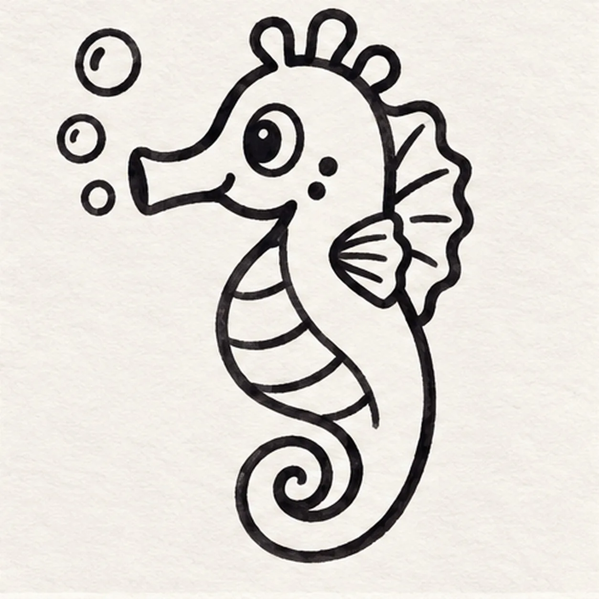

Felt-tip marker mode
Let's draw a cartoon seahorse
Treat this as one playful practice round: sketch the idea loosely, simplify the shapes, then commit with confident marker outlines and bright fills.
-
01

Draw the head and body
Start with a short tube snout pointing left, curve up over the forehead and back of the head, then sweep down through a rounded torso. Return along the belly, leaving its lower end open for the curled tail.
Marker tip: Make the tube snout short enough that the rounded head remains the main shape. Stop both lower body ends at the same height.
-
02

Curl the tail
From the open lower body, draw a broad tail that curls once inward to a rounded tip. Attach one scalloped fin to the upper back and give it three short ribs, keeping the torso edge clear.
Marker tip: Let the tail turn once and leave its inner spiral open. Keep the dorsal fin behind the back line so it reads as attached.
-
03

Give it a face and crest
Place one round eye above the snout with a small dark pupil. Build exactly three short crest bumps along the crown, rooted in the head rather than floating above it.
Marker tip: Count exactly three crest bumps. Put the eye above the snout and leave one tiny unfilled glint in the pupil.
-
04

Band the belly
From below the jaw, curve an inner belly boundary toward the tail base. Cross it with three short curved dividers to make four broad bands. Attach one small fan-shaped pectoral fin behind the neck.
Marker tip: The inner belly line needs to stay inside the body. Space the three dividers so the four color bands remain broad enough for a marker tip.
-
05

Add bubbles and cheek spots
Draw exactly three simple bubbles rising beside the snout, then place two small spots on the cheek. Reinforce the existing outer contour with a black felt tip, keeping the inside bands lighter.
Marker tip: Keep all three bubbles clear of the snout. Two cheek spots are enough; extra spots would crowd the large eye.
-
06

Color the seahorse
Fill the established body coral orange, the belly bands pale yellow, the dorsal and pectoral fins teal, and the three bubbles light blue. Leave a little white paper in each region and strengthen only the existing black edges.
Marker tip: Color from each outline inward with slightly uneven strokes. Count three head bumps, three bubbles, and four yellow belly bands before stopping.
![Handmade face-free felt-tip marker drawing of exactly two crossed garden gloves with one coral foreground glove leaning left, one teal rear glove leaning right, four rounded fingers and one thumb on each glove, one curved palm reinforcement panel per glove, two golden-yellow cuff bands, exactly three black stitch dashes on the foreground cuff and two visible dashes on the partly covered rear cuff, exactly two open-paper curved highlights, one separate bright-green pointed leaf with a dark branching vein pattern, thick imperfect black outlines, visible marker streaks, and one broken deep-navy ground shadow](../assets/cartoon-garden-gloves-with-leaf-finished-v1.webp)
![Handmade face-free felt-tip marker drawing of one pirate spyglass tilted from lower right toward upper left with one coral tapered main barrel, exactly three black diagonal grip stripes, one wide golden-yellow front lens ring, one deep-aqua lens with one large open-paper crescent reflection, exactly two teal telescoping rear tubes, exactly two golden-yellow joint collars, one rounded teal eyepiece, one deep-navy wrist cord attached with one knot and forming one open loop, exactly three golden-yellow four-point sparkle bursts, exactly two open-paper hardware highlights, thick imperfect black outlines, visible marker streaks, and one broken deep-navy shadow made from three loose patches](../assets/cartoon-pirate-spyglass-finished-v1.webp)
![Handmade face-free felt-tip marker drawing of one front-facing teal laundry basket with exactly two oval side handles, three broad horizontal weave rows, four aligned vertical divider routes, one coral sock and one golden-yellow sock draped over the rear rim with exactly three deep-navy curved stripes each, one violet folded towel between them with one dark stitched edge, exactly two open-paper highlights on the lower basket front, thick imperfect black outlines, visible marker streaks, and one broken deep-navy ground shadow](../assets/cartoon-laundry-basket-with-striped-socks-finished-v1.webp)